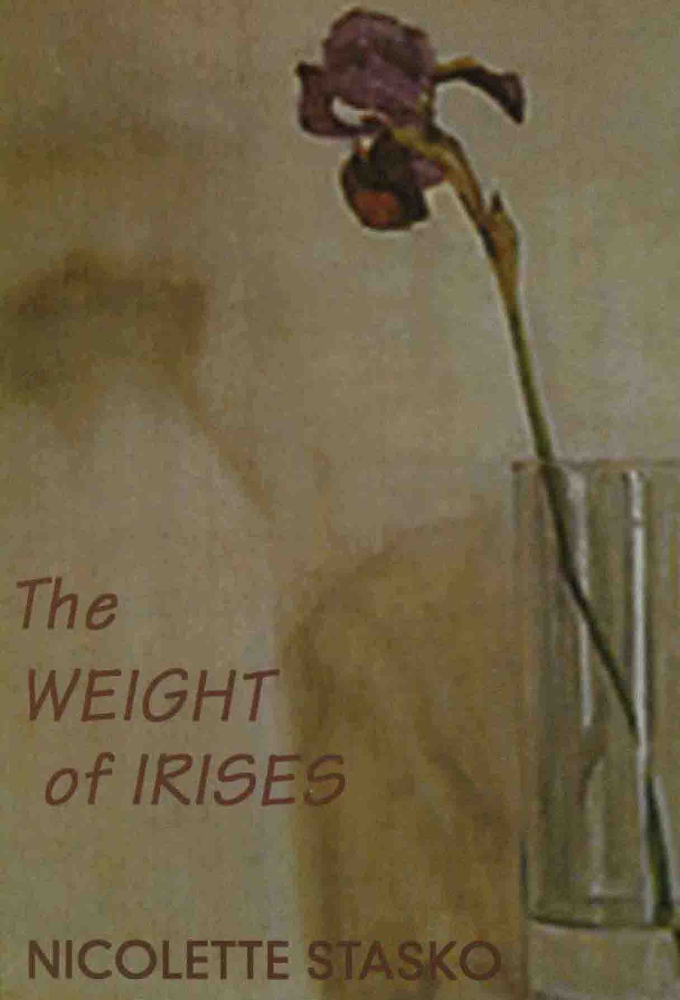

The Weight of Irises
Nicolette Stasko

Description
then we realize this is a floating world the weight of irises pulling everthing away from the centre in spite of the red heart pinning it like an arrow Nicolette Stasko’s poetry invites us in by its contradictory surprises. Deliberately cool, it uncovers emotional depth. The lightness and deftness of her touch can expose our darkness. In her hands an iris can shift the world or illuminate the corner of a room. Her control, both emotional and poetic, is awesome... a triumph of critical and creative distance from the autobiographical self. At times, her poems recall the high points of Imagism. Don Anderson, Sydney Morning Herald Stasko is one of our finest and most sophisticated female voices. Suzy Baldwin, Voices ...while being controlled and poised, the poems unswervingly confront the terrible and sad in life... an individual who is deeply affected by her experiences. Adrian Wiggins, Southerly A painterly quality in poems that make the mundane shine. Larry Schwartz, The Sunday Age
Description
then we realize this is a floating world the weight of irises pulling everthing away from the centre in spite of the red heart pinning it like an arrow Nicolette Stasko’s poetry invites us in by its contradictory surprises. Deliberately cool, it uncovers emotional depth. The lightness and deftness of her touch can expose our darkness. In her hands an iris can shift the world or illuminate the corner of a room. Her control, both emotional and poetic, is awesome... a triumph of critical and creative distance from the autobiographical self. At times, her poems recall the high points of Imagism. Don Anderson, Sydney Morning Herald Stasko is one of our finest and most sophisticated female voices. Suzy Baldwin, Voices ...while being controlled and poised, the poems unswervingly confront the terrible and sad in life... an individual who is deeply affected by her experiences. Adrian Wiggins, Southerly A painterly quality in poems that make the mundane shine. Larry Schwartz, The Sunday Age
{kind=link}
Information
| ISBN | 187604439X |
| Release | 2003 |
| Pages | 96 |
About the Author
Reviews
Oliver Dennis, Island
Poetry Survey Oliver Dennis Island , No. 96, Autumn 2004 The robust maturity of the poems in The Weight of Irises suggests that Nicolette Stasko may be working at the height of her powers. Particularly impressive is Stasko’s careful handling of words, her instinct for knowing when to stop and when to keep going. Take the concluding lines from ‘Ashes,’ for example, which mourns the declining influence of poets: ‘who will be here / to help us see? / to be the mole fo the wind / reminding us of death’s bright clothes / pointing out / where the stars used to be / from under the glare of so many / busy street lamps.’ And there is her startling description, in ‘A Single Ascension,’ of a visit to an Italian tourist site: ‘cathedral steps / are an alabaster bed / of chambered ammonites / curled like ladies’ ears.’ Elsewhere, Stasko’s phrasing is equally poignant and memorable: her response to her young daughter, for instance (‘a small white owl / sits lightly / on your breast’), and the glorious understatement of ‘complicated shadows’ in 'Plaza en Colonia del Sacramento.’ Very often, Stasko contrasts personal feelings of emptiness with the abundance of the natural world: her poetry has a marked rueful quality. Yet, there is still much in the book celebrating life's pleasures, in particular those of food and good living.
Adrian Caesar, Westerly
New Poetry 2003-2004 Adrian Caesar Westerly , Vol. 49, November 2004 Another poet [following Adrienne Eberhard ] whose precision and clarity I have always admired is Nicolette Stasko. Her fourth book, The Weight of Irises , does not disappoint. The wonderful art of Stasko’s poetry is to produce a voice that seems artless. As I read, I seemed to hear the poet as if she were speaking directly to me. In this way, the reader is invited to share intimacies. Though Stasko has always eschewed conventional punctuation, her lines form rhythmical and grammatical sentences, which sometimes seem to slide into each other by sharing a phrase. It is a way of making the reader pay attention to the tensions between the syntax and the lines, and a method of jolting the reader into awareness at key moments. Stasko has a painterly eye, and her interest in fine art is evident in several poems here. And yet there is never a sense that we are leaving the world of lived experience to indulge in some abstract or superior realm. On the contrary, Stasko engages with paintings as she engages with life, searching for the radiant moments of illumination in the full knowledge of the darkness. Here is a poem from her sequence ‘Dwelling in the shape of things: Meditations on Cezanne’: Is it possible to represent our feelings so exactly? the twisted trunks of trees mimic furiously writhing couples volupte whose embrace offers nothing but violence not even in the pale violet blue of the sky the vulnerable green of the leaves and grass is there peace or tenderness only desire a leaping dog with bared teeth the screams of a woman being raped or giving birth are the same we would rather believe these figures might be dancing and that the one who bends to wake the sleeper does so gently Stasko is equally capable of telling a story, offering a dramatic vignette or pursuing a meditation. She is various, subtle and clever. I cannot do the book justice in this small space, better that you should read it for yourselves.
Noel Rowe, Southerly
Could a Poem Talk to a Lettuce (?) Noel Rowe Southerly , Vol. 63, No. 3, 2003 Those who admire Nicolette Stasko’s poetry - its painterly eye, imagistic power, skilful lineation and honest voices - will be delighted by The Weight of Irises . It contains so many powerful poems. I particularly liked the precise humour of ‘January 18th’, the austere sadness of ‘Long Distance’, the teasing insight of ‘Notes of the Pillow’, the strong and shifting currents of ‘Days’, the vagrant spirituality of ‘A Little Shelter’, the savoured sensuality of ‘Mudcrabs’, the emotional exposure of ‘The Sound’. And I have not yet mentioned the poems based on paintings - it is good to find that ‘Dwelling in the Shape of Things’, originally published by Vagabond Press in its rare object series, is reprinted here. There is hardly a word wasted (I’m not sure that the last three lines of the very beautiful ‘December 31st’ are necessary); the images arc precise and the emotions exact. This is Stasko’s best collection so far. Tbe Weight of Irises is a book in which the apparent contraries of iris and ash, beauty and ruin, revelation and loss, can live together. ‘Ashes’ is, therefore, in appropriate and effective opening poem. Beginning with a vision of how ‘All over the world / poets are going tip in flames,’ it ends: who will be here to help us see? to be the mole of the wind reminding us of death’s bright clothes pointing out where the stars used to be from under the glare of so many busy street lamps While the image of ‘death’s bright clothes’ introduces a concern for negativity (absence, silence, and loss are often recognised), the gesture of ‘pointing out/ where the stars used to be’ resists the way negativity has become something of an easy, evasive trope. It keeps desire uncomfortable. This is poetry that wants presences that are tangible, tactilc, faintly sacramental. ‘After Many Sleepless Nights’ (a very impressive poem) knows that ‘death is all around’: cancer is growing, passengers are getting off a train, fish have disappeared from a pond, fires are making ash. In the middle of all this: black currawong among the fallen red leaves between the black bodies of the trees the persimmon blazes all its golden flames catching and holding the wind I am typing out pain have almost forgotten it now another voice is speaking The poem closes by explicitly reminding us ‘how terrible the art / of resurrection ‘-a risky move, but one that works, partly because the reference is left slender, and partly because the poern has reworked tile vocabulary of belief, referring lightly to dark reflections, mysteries, sacrifices and loss, and placing images of death next to those of birth. Quite a few of the poerns in The Weight of Irises set out to take experience through to this depth. ‘The Sea Horse’, in particular, does a very interesting variation on the theme of resurrection, showing how an image, a truth, ‘will not / be buried’, and settling, through that lineation, between affirmation and unease. ‘December 31st’ somehow manages to evoke the desire for angels after declaring ‘there are no angels / hovering over / the houses in Glebe’ and taking up the search for ‘true’ words ‘not fooled by the noise / of clapping mistaken / for wings’. ‘Seven Devils’ tells the story of a woman whose mind, body and blood threaten the religious establishment, if woman who is therefore said to be possessed; as Stasko tells it, the narrative of exorcism is gradually taken up by images of crucifixion. The speaker also seems to know that the Madonna has been used against her: the cool Madonna waits around her head gold glimmers in the shivering light she does not answer me even if I were to ask Stasko is fundamentally a spiritual poet, in the sense that she is writing her way between supernatural list and empiricist notions of the real. She may deny a certain kind of angel, and she may use words like ‘resurrection’ or ‘ascension’ in ways that leave their traditional meaning hanging open, but she also insists on honouring the body’s intensities and turning experience over at its edge. In ‘Dwelling in the Shape of Things’ the ‘round reddish gold’ apples are only as substantial as the ‘deep shadows’ they make ‘on a sail of white cloth/ like holes in a field of freshly fallen snow’; the woman holding ‘warm fruit’ is leaning towards the centre giving or taking away and what difference between such gestures in the end? Although it knows the satisfactions that come from paintings, flowers, reading, food, relationships, Stasko’s poetry realises these are all edged with emptiness. It is still hungry.
Radio National Review
The Weight of Irises Geoff Page Radio National (ABC), November 2004 Black the colour of mourning distinguishes survivors from the dead and in dreams indicates only minor misfortune so violet is the colour of the soul according to Dante who surely saw it as a shadow before or after him or as a vague haze between his eyes what then is the colour of sorrow the sky on these days neither blue nor grey but a kind of empty white merely a backdrop the blank page white the colour of clothes we once buried the dead in the colour of calamity these too-delicate flowers on the table bursting from their veined leaves like trumpets wings of undiscovered insects their thin white stamen so purely white they are not to be believed and soon will be a memory the shade of separation the sign of detachment when will we know red? ‘On the Phenomenon of Colour’ That poem, ‘On the Phenomenon of Colour’, is typical of the best poems in Nicolette Stasko’s third collection of poetry, The Weight of Irises . While quite a few of the poems early in the book are fairly subjective, consciously female explorations which vary from existential despair to the stresses of domestic life, ‘On the Phenomenon of Colour’ has an almost Eastern detachment about it. It is an essay - but hardly an article for a journal on optics or a philosophy magazine. Stasko is concerned with the emotional associations of colour. ‘Black the colour / of mourning’, she says, ‘distinguishes / survivors / from the dead...’ She is reminding us very visually of that crucial distinction at funerals - how all the vertical ones in black are not yet in their coffins like the horizontal one they mourn. From here, in moods varying from playfulness to melancholy, the poet goes on to suggest other linkages between colour and emotion: ‘Violet / is the colour of the soul’, she says - and ‘a kind of empty white’ turns out to be ‘the colour of sorrow’. Here she, almost playfully, contradicts her opening line about black being ‘the colour of mourning’. Rather in the manner of Robert Frost’s famous poem ‘Design’ Stasko then goes on to compare the whiteness of ‘these too-delicate flowers’ with the ‘thin white stamens’ of ‘undiscovered insects’. It all leads to the ‘shade of separation’ and is ‘the sign of detachment’ - not a quality that Stasko is typically drawn to. And the reason is suggested in the last line of the poem: ‘when shall we know red?’ One hears an echo here too of the great American poet, Wallace Stevens, in his ‘Disillusionment of Ten O’Clock’ where he has a New England town ‘haunted / By white night-gowns’, relieved only by ‘an old sailor / Drunk and asleep in his boots’ who ‘catches tigers / in red weather’. Although Nicolette Stasko has now lived in Australia for many years her American origins are not forgotten, it would seem. Other poems in The Weight of Irises which have a comparable objectivity include ‘Plaza en la Colonia del Sacramento’ and the poem, ‘Holes’. The former has an epigraph ‘after Jorge Damiano’ and may, in fact, be a loose translation. In any event it has a surreal, almost metaphysical strangeness. Why, Stasko says of ‘a grey dove / quietly absorbing a small piece of the night’, should she try to describe it. Rather, she says, ‘let it enter / remain there forever / or pass through me / clean as a sharp blade / going somewhere else’. ‘Holes’, the other poem mentioned, has a central-European atmosphere to it - with its elemental imagery and its puzzlement at the metaphysical. ‘a hole dug in the earth,’ she says, ‘is not empty’. Nor is ‘the hole / in your old jumper / the foot through the sheet...’ It’s no surprise that Stasko mentions elsewhere, in another poem, that Zbigniew Herbert, the great Polish poet, is one of her favourites. At the artistic centre of this book, however, is Stasko’s sequence ‘Dwelling in the Shape of Things’, already published as a chapbook by Vagabond. In sixteen sections the poet meditates on a series of paintings by Cézanne and generates some of the most sophisticated and densely-textured work in the book. Stasko here is concerned to articulate not only her personal response to the paintings but, more ambitiously perhaps, to create a verbal equivalent to them, akin, in some ways, to a translation. While some traditional art critics might well benefit from reading this sequence, ‘Dwelling in the Shape of Things’ is not a piece of art criticism or scholarship. It does show, however, that there is more than one useful and persuasive way of responding verbally to great paintings. Unfortunately, not all the poems in The Weight of Irises are of the same standard as the ones I have mentioned. Some readers, for instance, may be less than charmed by Stasko’s determination to do without full stops throughout. This technique, which goes all the way back to Apollinaire in 1912, does sometimes generate interesting ambiguities and productive mis-readings but more often it simply forces the irritated reader to go back a line or two to check on the syntax. Some poems, too, like the first one, ‘Ashes’, fall away slightly at the end while others, such as part 2 of ‘Death of Blue,’ can sometimes finish rather too grandiloquently with a phrase such as ‘O white despair’. Like most contemporary Americans, Stasko writes within the free verse orthodoxy but is more often inclined to the William Carlos Williams ‘thin poem’ than the Walt Whitman ‘fat’ one. In some poems her lineation seems finely judged; in others it could probably be rearranged without loss. On balance though, in its best poems, The Weight of Irises fulfils its very considerable ambition - and, despite the awards and commendations given Nicolette Stasko’s first two books, it is almost certainly her most impressive collection to date.
Overland Review
What We Actually See: new poetry Kerry Leves NSW poet and critic Overland , No. 175, Winter 2004 The quietness - product of tonal control, a deliberate use of reticence and silence - belies a fiery emotional intensity (read the poem sequences ‘Days’ and ‘The Sea Horse’) and a formidable commitment to purpose. That purpose might be read as an exploration of subjectivity that omits autobiography, puts memoir on hold. The self of ‘Some Windows’ begins with what is visible from the window of a hotel room - various people, doing various things, separated in space, contemporaneous in time - but writes these observations as a meditation on the subject - the subjectivity - that defines itself through the visual/verbal constructions. Some windows in all the time we watched never showed a single sign of movement and might in fact have lately been abandoned by the dead their pure white blinds drawn down blank indescribable This reflexiveness makes a counterpoint to another, less overt theme, which the book’s title hints at: subjectivity can’t ‘know’ (or ‘show’) itself, except through interaction with others, who also constitute subjects, and thus mortal lives. The struggle - and this is an agonistic text, its spare lines constituting an impeccably ironised surface - becomes that of keeping faith with what is, while acknowledging its delimited witness. My exposition may sound like the Heisenberg Principle revisited, but the poetry is fine, imagistic, subtle and searching. And it gives weight to things - not only irises withdrawing all the blue from the world but, by the shoreline of a beach, two eels baking their living flesh drying into leather straps Immediately after these lines it is noted, unpretentiously, that ‘we could have worn [them] for belts’: what ‘is’ (dying) is contiguous with everything else that ‘is’ (living and/or dying). The poem-sequence ‘Dwelling in the Shape of Things’, is a meditation on paintings by Cezanne, the post-impressionist artist whose contribution is usually discussed in structural terms. ‘Dwelling’ inscribes each of its chosen paintings with the undernotated subjectivity of a viewer, thus breaking out of the art-history and aesthetic frameworks around the concept of ‘Cezanne’. The sequence keeps faith in its own way with the painter’s concerns: ‘...whatever may be our temperament, or our power in the presence of nature, we have to render what we actually see, forgetting everything that happened before our time’, Cezanne wrote. Stasko’s poem replies contrariwise to the implicit (self)idealising of the artist, while empathising with his project: we would like to go there ...to be dissolved in a delicate geometry all things becoming equal
The Weekend Australian Review
Small Still Beautiful Barry Hill The Weekend Australian , 14-15 February 2004 Nicolette Stasko's The Weight of Irises sustains a sensual lament about things ephemeral and mortal. The settings are often exotic, the poet’s voice solitary, melancholic. The book coheres, as do the best slim volumes, so that overall you experience a poet’s uniquely developed journey.
The Age Review
Metres of Wit, Without Explanation The Weight of Irises Gig Ryan The Age , 31 January 2004, Review (pg.4) Nicolette Stasko’s The Weight of Irises reveals a very different talent from Farrell’s [ ode, ode ], although both, Orpheus-like, render their worlds into existence. In Stasko’s work, poetry is an exhumation, digging out the truth of things. Enjoying the mud crab she has cooked ‘in the foil light / of morning’, for example, she valiantly shows the ferocity and self-serving deception in human nature, while ‘Death of Blue’ explores meaning in the natural world as well as the futility of such investigations: ‘twelve blue iris / incandescent / in the morning light seemed / a sign of something / a gift from the world / unasked for / unmortgaged / send a message I beg / we are! / we are! / they sing.’ Some poems investigate a heightened consciousness aroused by temporary solitude or break from routine, others are full of the sharp observations travel induces, where she sees houses ‘shunning the dark swords of trees’ or remembers discovering a wounded seahorse with ‘the sky rinsed of stars’. In others, opportunities are politely lost - ‘a student reading / at a desk all day / I wanted to call across to him / life does not last that long / but of course never did’. Stasko generally uses short lines, which in these poems seem to pin the world into place, but her many fine descriptions and insights are sometimes lost in rather loose unstructured poems.
Australian Book Review Review
The Shape of Things Jennifer Strauss Australian Book Review , No. 255, October 2003 Adrienne Eberhard Agamemnon’s Poppies Nicolette Stasko The Weight Of Irises ‘Dwelling In The Shape Of Things’ is the title of Nicolette Stasko’s sequence of sixteen elegantly executed ‘Meditations upon Cezanne.’ It could, however, serve as an appropriate epigraph to both these collections. Given that the natural world is Stasko’s and Adrienne Eberhard’s main locus for exploring and responding to ‘the shape of things,’ each could be described loosely as a ‘landscape’ poet, but the character of their work is neither nationalistic nor naturalistic. They write essentially of their experience as sentient beings inhabiting, and intimately responding to, the world of things. In doing so, they contend with mysteries that dwell in these worldly shapes. The difference in the tonal and intellectual complexities of their responses is characteristic. Eberhard is the more exuberant. She seems too confident of the independent reality of ‘The speech of the world / whispered and nudged on the wind’ (‘Coastlines’) to entertain the perceptual doubt voiced by Stasko in ‘Is it true that our eyes see what / our hearts have conditioned?’ (‘Dwelling in the Shape of Things’). The resonance of that question depends in part on its contested relationship to the calm assurance with which she speaks elsewhere of ‘everything held together / by an eye’ (‘One Return’). It is instructive to compare poems in which each pays respect to the power of non-literary art to shape the world. In the richly textured ‘Ceramics/Braille,’ Eberhard’s celebration of the perceptual medium of touch reaches a triumphant conclusion in: Raised to exactness of fingerprints, the whole world is lit transparent until muteness speaks in many tongues; the heart’s pulled taut, listening to the world spoken through these hands. Stasko’s perceptual medium is the eye, and, while it can offer enchantingly direct contact with the world through a still life in which ‘a chaste kitchen table with one shy drawer / humbly balances it all,’ at other times entry to the painted landscape is incomplete: the mind builds a bridge over dark blue water but cannot walk on it distance remains we stay forever on the peopled shore content with the view through a window If both commit to immanence, the refusal to concede to transcendental notions of art as ravishing us from the world has very different expressive outcomes, at least in these passages. But once again, it would be dangerous to take the muted, somewhat melancholy acceptance of reality found in the cited section of ‘Dwelling in the Shape of Things’ as more than one definitive moment in the experience of a poet who also writes of waking after illness to ‘a gift from the world’ in the shape of twelve blue irises that fly and settle like bright swallows around the room send a message I beg we are! we are! they sing ‘The Death of Blue’ It is no coincidence, I think, that Stasko writes of thinking as she watches a beloved daughter: ‘I could wish you / only one eye to see / what is beautiful and good / but that would be a lie’ (‘Three Days’). Stasko’s sense of how the world is may be shadowed by the personal grief identified in ‘After Many Sleepless Nights,’ where a sister’s mind is ‘sprouting tumours / like mushrooms’. But there seems something more fundamental in her reflection: ‘How little we know about one another / each locked in our own delicate case / surrounded by dark scenery.’ Despite benign moments that move her to declare benediction on ‘the other people in the house / who tread lightly as ghosts / but are corporeal beings’ (‘Days’), the general sense of faulty connections is made specific in her precise evocation of that all-too-familiar situation, the dutiful visit to what ‘should be home’. where my father sits deafly reading the newspaper in the zinc light of the TV screen my mother packing up the plastic Christmas tree a corpse to be gotten rid of such a mess she says Stasko’s melancholy is tempered by too much intelligence and wit to yield to sentimentality or self-dramatisation, and her take on alienation can be entertainingly sardonic, as in ‘On the Economy of Crying’. ‘When I cry it is never enough when you cry it is always too much’. Eberhard’s poems about human relationships - the love poems of the early part of the collection, and the later poems about pregnancy and children - certainly do have more of the beautiful and the good than otherwise. ‘In the Bath’ is as lovingly lit and detailed as a Flemish domestic study, with the adult body ‘anchored in the shallows / rocking and keeling in the soap- / water; homely as a house boat’, and she depicts an infant body with ‘small pink fists colliding, / toes pointing in all directions’. It is not that Eberhard is unaware of the potential for absence in every beloved presence, or even of the possibility of existential loneliness, but she is no ironist, and so is free to commit herself to the unqualified richness of lines like: Honey pools on my spoon, rolls of redness, sticky as the sun; for a moment, beehive tombs and poppies crush in my mouth - Mycenae rises rich and oozing, a gold memory dissolving on my tongue. ‘Mycenae’ Eberhard’s language seems untrammelled by Stasko’s edgy awareness that, despite the plentifulness of words, the problem is to choose the true ones without an angel’s help not fooled by the noise of clapping mistaken for wings Just occasionally, there seemed to me a bit too much of ‘the blood-rush of myself’ (‘Ariel’s Realm’) in Eberhard’s writing, which may be why I most enjoyed those poems where the energy of her image-making was shaped by one of two possibilities. One is the adoption of a fixed form such as the sonnet: for instance, I found ‘Delusions’ a much more concise, and hence forceful, poem of childhood desires and inadequacies than the less shapely ‘The Wedding Dress.’ The other is dramatisation, which is rich in its possibilities for directing imagistic energy. The five ‘Cleopatra Poems’ are pithily sexy, but for me the best writing in the collection is in ‘Lines from the Black Sea,’ a sequence spoken by the exiled Roman poet Ovid. Eberhard’s understanding of, and responsiveness to, the physicality of language movingly informs the exile’s longing: ... for the polished glide of Latin, smooth as skinned and pitted grapes exploding in my mouth, the sensuous rub of words, silken as the sheen of oil over skin. Each of these collections has much to offer. A preference for one over the other may depend largely on the reader’s temperamental disposition. But as ideal readers, we ought to be capable of taking pleasure in the different qualities, the varied balance of passion and poise in each. Besides, the pair make a handsome addition to the bookshelf. Black Pepper is to be congratulated not only for its continuing commitment to the publishing of poetry, but also for matching quality production to fine poetry.
The Canberra Times Review
Four Australian poets with a variety of styles John Mateer The Canberra Times 11 October 2003 Nicolette Stasko is a well-known name in Australian poetry... she is a poet who has an interest in adhering to the use of a single style and in exploring the various possibilities it has to offer. Her interest in the imagist poem with its focus on image, slender line and intimate, precise voice means that her work is able to develop a certain engaging emotional intensity that escalates the deeper the reader goes into the book. As with much imagist poetry, in Stasko’s work there is a real pleasure to be found in ‘mere’ description, in sensuality and colour - whether in the eating of mudcrabs (‘Mudcrabs’) or a meditation on black (‘On the Phenomenon of Colour’) - as much as in the texture of the voicing. There is, as is often the case with imagist poetry - in Australia its best-known exponent is Robert Gray - a tendency towards an almost-Japanese aesthetic in which the moon, flowers, dreams, birds, seasons and colours are drawn to the reader’s attention with a clarity that serves to emphasize the lack of clarity and certainty that is our usual, melancholy experience. Stasko is mindful that that is one possibility for her poetry, and that there are other emotions, other observations. Her use of sequences often enables her to meditate more deeply, as is the case in ‘Dwelling in the Shape of Things: Meditations on Cezanne’, or to construct a kind of narrative, as in ‘Days’. It is in the expanse of her emotional range that she exceeds her style’s usual limit and succeeds in producing a gentle, caring poetic voice that is always appropriate to its concerns.